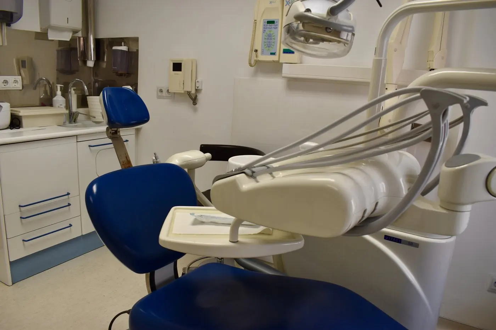

La encía que cubre parcialmente una muela del juicio puede inflamarse y dificultar la limpieza. La extracción es una posibilidad, pero la decisión requiere revisar la muela y su posición.
¿Por qué se inflama la encía de la muela del juicio?
Cuando la muela sale solo en parte, puede quedar un pliegue de encía sobre ella. Allí se acumulan restos de comida y placa con facilidad. Esa zona puede doler, hincharse o infectarse: se conoce como pericoronitis. También puede haber caries en la propia muela o en la de delante, o falta de espacio para que erupcione con normalidad.
Síntomas que conviene vigilar
Son habituales las molestias al masticar, la encía roja o hinchada detrás de la última muela y el mal sabor. Si el dolor aumenta, aparece fiebre, cuesta abrir la boca o se hincha la cara, solicita valoración dental sin demora. Una hinchazón que dificulta respirar, tragar o hablar requiere atención médica urgente.
Qué hacer antes de la cita
Mantén la zona limpia con cuidado, sin lesionarla, y evita presionarla o intentar abrir la encía por tu cuenta. Puedes escoger alimentos que no empeoren el dolor. Si necesitas alivio del dolor, consulta a un profesional sanitario o farmacéutico sobre la opción adecuada para ti. Los antibióticos, cuando se necesitan, deben indicarse tras una valoración: no sustituyen el tratamiento dental de la causa.
¿Hay que extraer siempre una muela del juicio?
No. Una muela sana que no causa problemas puede seguirse en las revisiones. La extracción se valora cuando hay infecciones repetidas, caries que no se puede tratar, daño al diente vecino u otras complicaciones. La exploración y, cuando procede, una radiografía muestran la posición de la muela y ayudan a comparar los beneficios y riesgos de intervenir.
Qué se revisa antes de recomendar una extracción
El dentista comprobará los síntomas, el espacio disponible, la higiene de la zona y el estado de las muelas vecinas. En las muelas inferiores también importa la cercanía de las raíces a estructuras nerviosas. Si se plantea cirugía, te explicarán el procedimiento, sus alternativas y los cuidados posteriores según tu caso.
En nuestra clínica de Opañel, cerca de Oporto, puedes pedir cita para valorar molestias en una muela del juicio y conocer si conviene vigilarla o tratarla. Consulta también nuestro servicio de cirugía dental.
¿Quieres que valoremos tu caso?
Estamos en Opañel, cerca de Metro Oporto. La atención es con cita previa: llámanos antes de acudir a consulta.
Llamar al 915 60 81 09 Escribir por WhatsApp